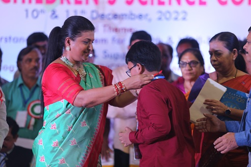
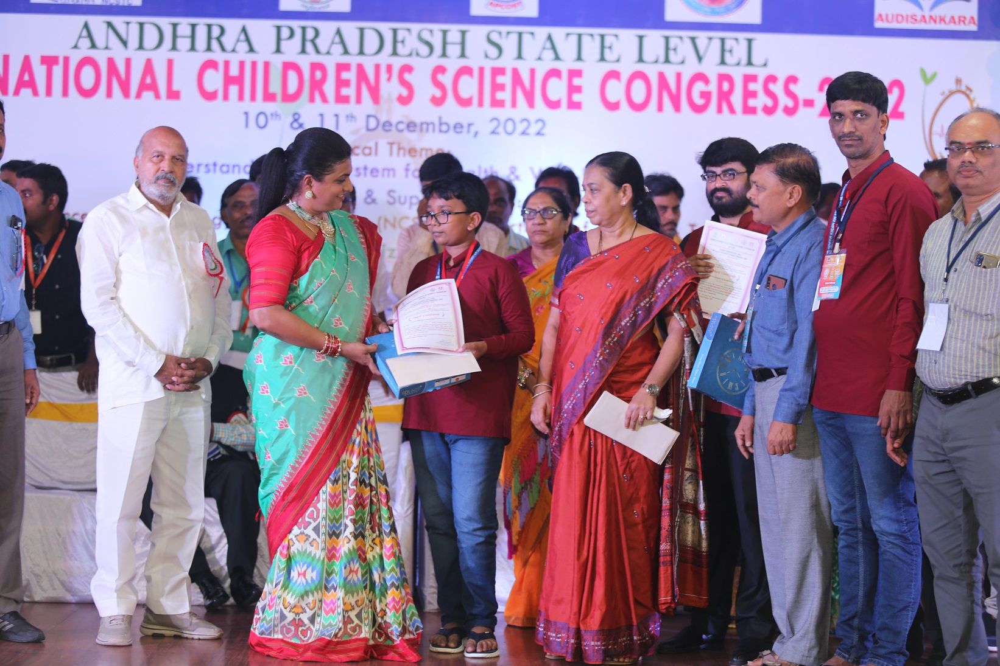
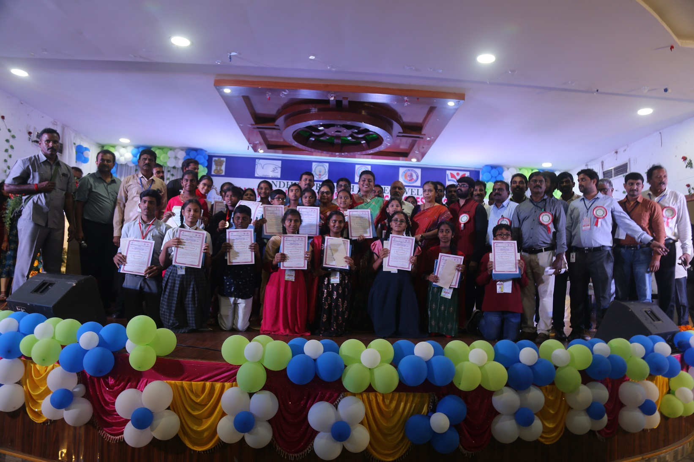
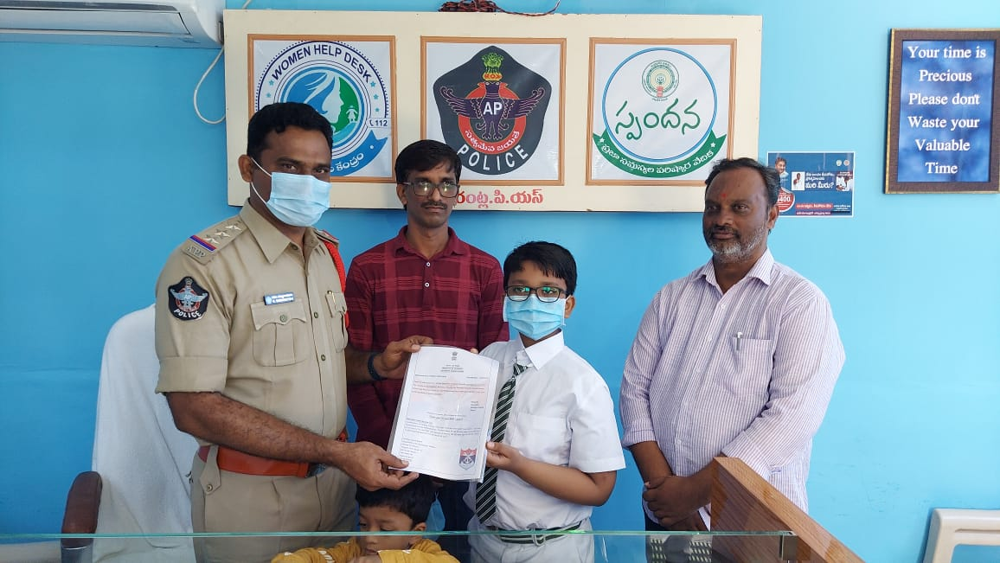
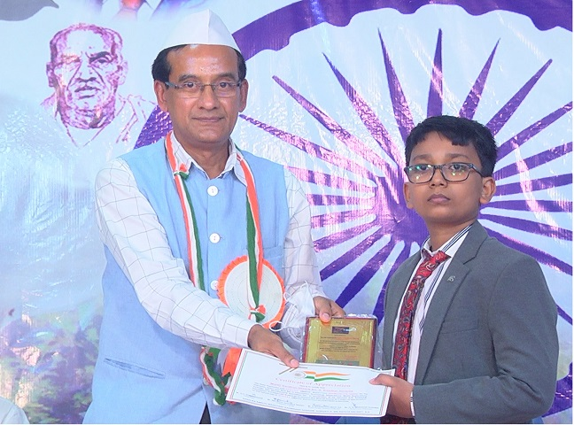

I am Gandham Dheeraj, resident of Gorantla village and Mandal Hqrs of Sri Sathyasai having 11 years of age and studying 6th class in Udaykiran EM School. With the inspiration of several patriots and scholars of our country and under the guidance and supervision of my parents, I could get recognition with the following activities.
Apps realesed so far :
First app
Real Estate Calculator is developed to cater the needs of persons engaged in real estate field and it was launched on 22-06-2022 by the Chief Manager of State Bank of India.
My Town Gorantla is developed to guide the strangers, local public and employees about locations of local necessary establishments likely Hospitals, Medical Stores, Banks and ATM centres, Government Offices, Temples, Statues, All educational institutions, Cinema Theatres, Petrol pumps etc., and this app was launched on 23-07-2022 by the District Collector & Magistrate, Sri Sathya Sai District, Andhra Pradesh.
UKEM School is developed to cater the needs of students and educational institutions. This app is developed particularly to reduce bag weight of my fellow students who are suffering to carry the school bags on their little shoulders. This App undoubtedly reduces almost 50% of student's bag weight and communicates about home work to the students as well as parents. This App is helpful for the parents, teachers, School Management to monitor the status of daily homework of students and this app was launched on 07-11-2022 by the Mandal Educational Officer, Gorantla, Sri Sathya Sai District, Andhra Pradesh.
30th National Children's Science Congress - State level Award.



With the inspiring call of Shri Narendra Modi, Hon'ble Prime Minister of India “Har Ghar Thiranga” I sold our National Flags on road side and raised a fund of Rs.10000/- and the same is transferred to Kendriya Sainik Board on 14.08.2022.


Videos
Appreciated by Nellore District Collector Sri Chakradhar Garu , IAS